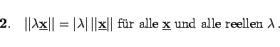

Einem Vektor  und einer Matrix
und einer Matrix  kann man jeweils eine Zahl ||x|| (Norm
kann man jeweils eine Zahl ||x|| (Norm  ) bzw. (Norm
) bzw. (Norm  ) zuordnen. Diese Zahlen müssen die Normaxiome erfüllen. Für Vektoren
) zuordnen. Diese Zahlen müssen die Normaxiome erfüllen. Für Vektoren  lauten diese:
lauten diese:
| (4.44) |
|  | (4.45) |
| (4.46) |
Die letzte der dritte Gleichung heißt (Dreiecksungleichung).
Normen für Vektoren und Matrizen können auf sehr verschiedene Art und Weise eingeführt werden. Es ist jedoch zweckmäßig, zu einer Vektornorm die Matrizennorm so zu definieren, daß die Ungleichung
| (4.47) |
gilt. Diese Ungleichung ist für Fehlerabschätzungen sehr nützlich. Vektor- und Matrizennormen, die diese Ungleichung erfüllen, werden als zueinander passend bezeichnet. Gibt es darüber hinaus zu jeder Matrix  einen Nichtnullvektor
einen Nichtnullvektor  so daß das Gleichheitszeichen gilt, dann heißt die Matrizennorm der Vektornorm zugeordnet.
so daß das Gleichheitszeichen gilt, dann heißt die Matrizennorm der Vektornorm zugeordnet.